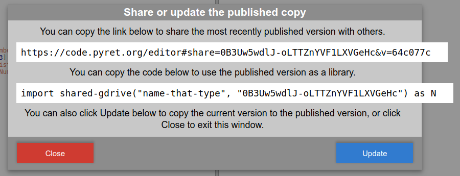

2.1.5 Provide Statements
‹provide-stmt› provide ‹stmt› endprovide *
‹provide-types-stmt› provide-types ‹record-ann›provide-types *
provide and provide-types statements specify which bindings and declarations in the program are available to other Pyret programs via import statements.
provide statements must be the first non-comment code in the program or a syntax error will be raised. provide statements have no effect when the program is run as the top-level program.
When the program is in a file that is evaluated via import, the program is run, and then the provide statement is run in top-level scope to determine the value bound to the identifier in the import statement.
Any interactive windows spawned by code in the providing program will appear when its code is imported.
In the first form, the stmt internal to the provide is evaluated, and the resulting value is provided. This is usually done via an object literal, where the key represents the binding passed to the external program and the value after the colon is the local identifier.
provide { x : x, draw-character : draw-character, external-funct-name : internal-funct-name } end
Types can only be provided by provide-types statements. If types are included in a provide statement they are ignored. In practice, types shared via provide-types also need to share detector functions to fully work as anticipated in importing programs.
The second wildcard * form is syntactic sugar for sharing all top level bindings and declarations other than types defined in the file.
To share all bindings and declarations in a file:
provide * provide-types *
While the wildcard form is somewhat simpler, specifying which names are to be shared explicitly through the object literal syntax can prevent namespace pollution, especially if you expect programmers (students) to use include to add the names directly to their top level namespace.
Programmers working through http://code.pyret.org can provide and import code via Google Drive sharing integrated into the development environment.
To allow other programs to import the provided values in a program, click the Publish button at the top of the window for the providing program and then the blue Publish button on the resulting dialog.
The published code can now be imported using the provided code:

Any time you make changes to the providing program that you want to be available to importing programs, you must re-publish the providing program, and reload any open instances of the importing programs.